Exploring the
GitHub Service Universe
All-round carefreeful Software Development with GitHub Services
Created by Björn Kimminich / @bkimminich
Björn Kimminich
- Division Architect & Security Officer @ Kuehne + Nagel (AG & Co.) KG
- Lecturer for Software Development @ Nordakademie gAG
- Member & Contributor @ Open Web Application Security Project
- Master of the (highly recommended) Code School Git Path


Disclaimer
This is not a marketing talk. It is a compilation of personal experience gathered while working on two of my own public repositories. I am neither affiliated with nor paid or otherwise reimbursed by GitHub or any other company behind the products mentioned in this presentation. No product evaluation or comparison study of any kind was conducted prior to choosing the services presented here.
Only services that are entirely free for open source projects are presented in this talk.
Agenda
- A very brief introduction to GitHub
- GitHub WebHooks & Services Hooks
- Showcase repositories kata-tcg & juice-shop
- 15 valuable GitHub Services in practical use
GitHub
Collaborative Git repository hosting service.

If you've never heard about GitHub before...
You don't trust...
...cloud service providers with your code?
Fact #1: GitHub offers free hosting of public Git repositories!
You are still...
...on Subversion?

Fact #2: Offering a sophisticated web-based graphical interface, GitHub still remains 100% compatible with the git CLI.
Or even...
...CVS?

Fact #3: GitHub supports collaborative development through e.g. forking and pull requests.
Not really...

Fact #4: GitHub (optionally) adds an issue tracker, wiki and project page to each repository.
Or seriously...
...no version control system at all?

Fact #5: Repository statistics and social extras like Feeds, Followers & Favorites are part of GitHub.
WebHooks & Service Hooks
Individual & Third Party Service Integration

Wait a moment! What are WebHooks?
Simply put: User-defined HTTP callbacks.
More specifically: HTTP POSTs that occur when something happens. So basically a simple event-notification via HTTP POST.
WebHooks on GitHub
- Subscription to events on GitHub.com
- Used to integrate individual applications or tools
- Installation on organization or repository level
- Types & payloads mirror the Event API
Service Hooks on GitHub
- Service Hooks can only be installed on repositories
- Only one Service Hook per integrator
- Supported events depend on service implementation
- Services come with their own unique configuration
Account Level Integration
- Close integration with GitHub by demanding repo or account access
- Do not require any manual setup by the user on the GitHub page
- Configured by the service provider via its own user interface
Integration Chain
- 3rd party does not integrate directly with GitHub
- Instead integration with APIs of other service providers
- Very useful in Continuous Integration context. Example:
What way of Integration should I use?
- GitHub recommends WebHooks for all new integrations
- If required use OAuth to manage authorization
- The existing github-service repo is not accepting any new services

Adding a WebHook to a repository
Repository WebHook Event Types
Organization WebHooks send events for all repositories in that organization. New events for repository creation and team membership are also available on organization-level.
Service Hook example: Twitter
WebHooks & Services in Settings menu

Adding Twitter as a Service
The Twitter Service configuration

Authorizing GitHub to send tweets

Setting tweet format and trigger branch

Sending a test payload

The Test Service function triggers the real Service once for the most recent commit!
The published push notification tweet
The Showcase Repositories

Kata TCG
Code Kata for a two-player trading card game loosely based on Hearthstone - Heroes of Warcraft
Sample Implementations
- Java (JUnit, Hamcrest, Mockito)
- Groovy (Spock)
- Javascript (Karma, Jasmine)
- Clojure (work in progress...)

Polyglot Build
Multi-module Gradle build using language specific plugins to build & test all sample implementations in one execution.

Juice Shop
An intentionally insecure RIA suitable for pentesting and security awareness trainings written in pure Javascript
Technology Stack


Build Setup


15 valuable GitHub Services
in practical use in kata-tcg & juice-shop

Notifications

NMA
Platform for delivering push notifications from virtually any application to an Android device.
Install free* NMA Android App
*The number of receivable notifications per day is limited. Unlimited premium account available via in-app purchase.
Generate API Keys for each Notifier
Enter API Key in NMA Service config
For convenience you can use the same API Key for all your GitHub repositories.
Notification on every push to GitHub

Amazon SNS
Simple Notification Service enables applications, end-users, and devices to instantly send and receive notifications from the cloud.
Create global topic in SNS Dashboard

Create Subscriber for SNS Topic

Configure SNS Service in GitHub
For convenience you can use the same SNS Topic for all your GitHub repositories.
Receiving sexy* JSON email on a push
*If you're not so much into JSON I'm sure you'll find a WebHook subscriber that is...
Continuous Integration

Travis-CI
Hosted continuous integration service providing different runtimes for different languages.

Last result for each repo & build history
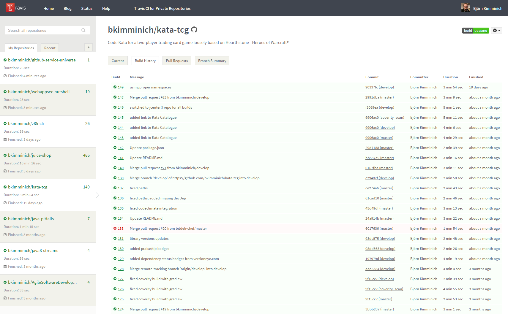Detailed build log for failure analysis

Build results per pull request
Build results per commit of a PR
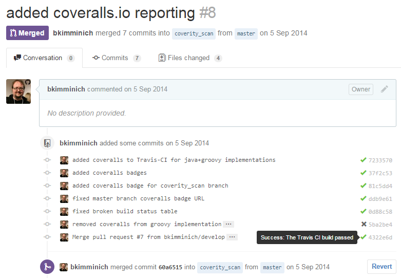
Warning about ongoing PR build
Of course there is also a warning when the PR build failed.
Watching the console of the running build

Merging PR with a warm All is well-feeling
Build configuration via .travis.yml file

Saucelabs
Automated cross-browser and mobile testing in the cloud for CI.

List of last test run results for juice-shop
Overview of the last failed test run
Live screencast of ongoing e2e test run
Triggering Saucelabs from Travis CI
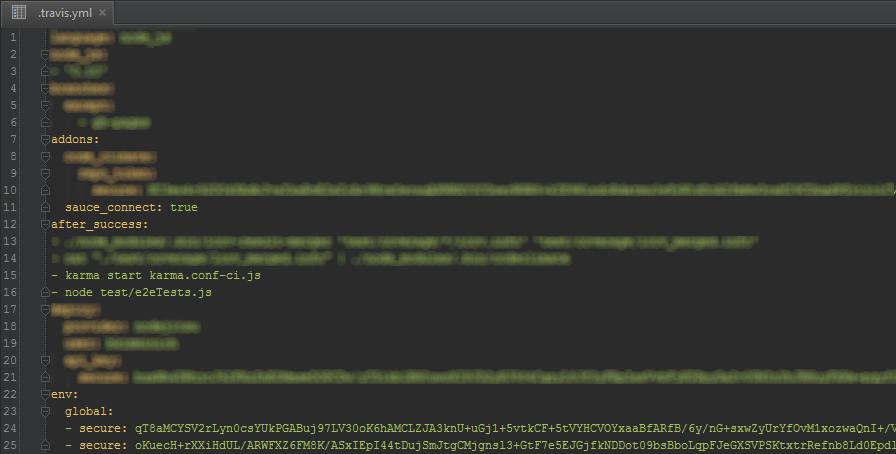
The secure tokens are your SAUCE_USERNAME and SAUCE_ACCESS_KEY.
Quality Assurance

Coveralls
Works with continuous integration servers to provide test coverage history and statistics.

Coveralls repository dashboard

Coverage of latest builds of a repo
Coverage per file for specific build

Drilldown into file coverage

Integration into PR overview screen
Passing test results to Coveralls
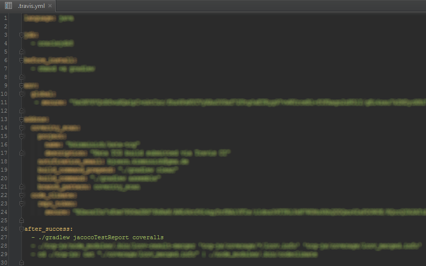Setup NMA email* on any coverage drop
For each new API key NMA automatically creates an email address apikey@nmamail.net that can be used for custom notifications.
Notification on a (forged) coverage drop
Coverity
Provides software quality and security testing solutions.
Coverity's Analysis Dashboard
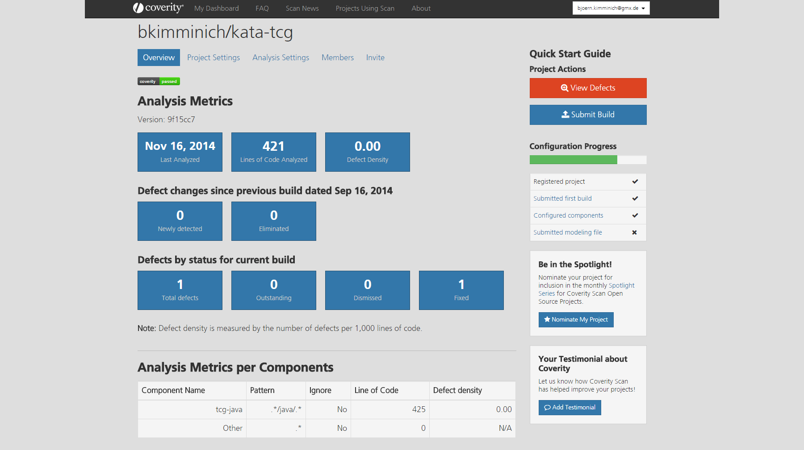Details on a specific issue
Coverity scan setup on a separate branch

Coverity limits the build submission frequency to 1-3 builds/day (and 2-12 builds/week) depending the project's LOC.
Codeclimate
Automated code review for Ruby, JS, and PHP providing feedback on code quality and test coverage.

Quality overview in Codeclimate Feed

Quality metrics and test coverage per file
Code smells identified by Codeclimate
Coverage details show a missed function
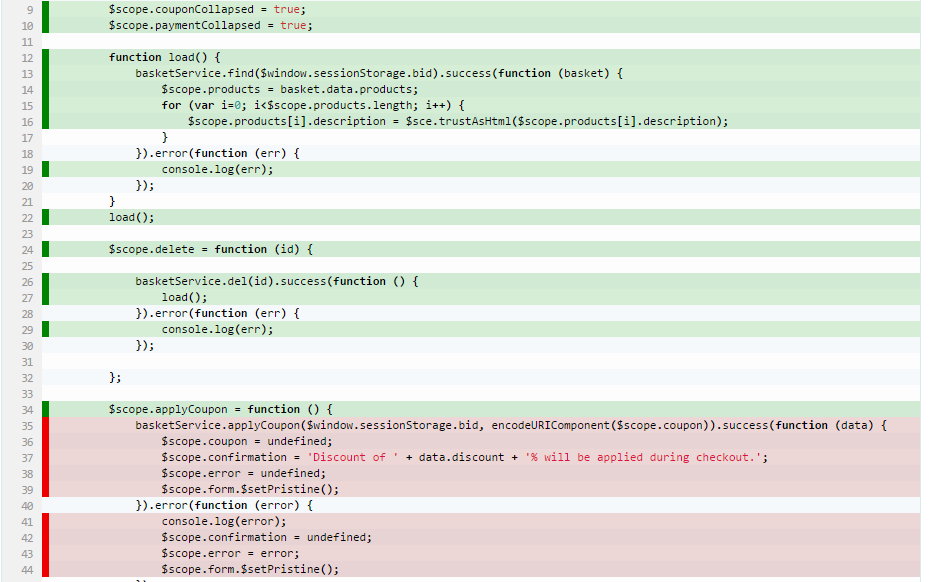Send merged LCOV data to Codeclimate

Automatically open issues for code smells

Refactoring issue created by Codeclimate
Dependency Management

Versioneye
Notification System for Software Libraries showing outdated dependencies in different supported project files.

Versioneye Project Overview
Supported Languages: Java - Ruby - Python - PHP - Node.js - JS - Objective-C - Clojure - CSS - R
Dependency details on project level
Graph with all indirect dependencies
This graph shows all the dependencies brought into the JS implementation of kata-tcg by the used testing libraries!
Gemnasium
Monitoring of project dependencies and alerts for updates and security vulnerabilities.
Dependency status overview for all repos
Outdated Jasmine test dependencies
David-DM
Watching your Node dependencies.

Automatically discovered Node.js projects

Unfortunately David-DM (v9.0.0) can only discover Node.js projects with a package.json in the repository root folder.
Dependency status with security advisories
A module without security warnings might still contain undiscovered vulnerabilities! On the other hand proven vulnerabilities of a module might be irrelevant in the context it is used in.
Continuous Deployment

Nodejitsu
Reliable, scalable, and user-friendly Platform-as-a-Service for node.js apps.
Nodejistu instance of Juice Shop

Open Source projects can apply for one free instance on Nodejitsu.
Application status dashboard

Setting up deployment in .travis.yml

By default only a successful build of the master branch triggers a deployment.
Docker
Open platform for distributed applications for developers and sysadmins.

Autobuild Repository on Docker Hub
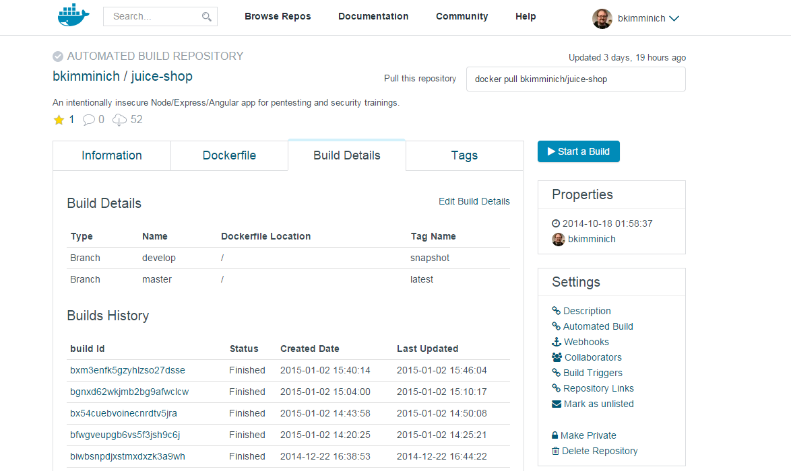Activated Docker Service Hook on GitHub
The Dockerfile of Juice Shop
Collaboration

HuBoard
Lightweight Kanban Board offering instant project management for GitHub issues.
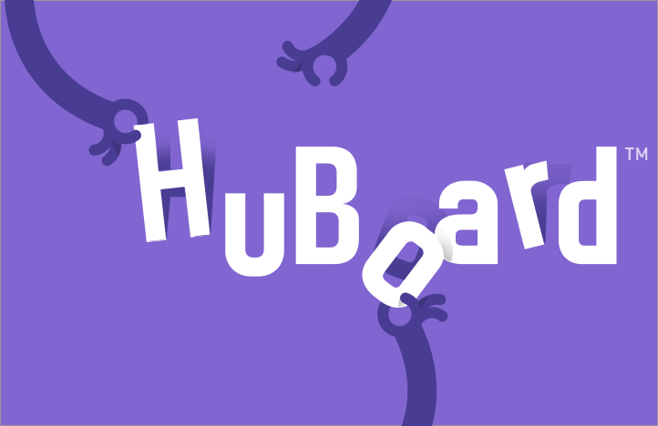Kanban Board based on GitHub issues
DnD for priorization and process flow

Simple creation and tagging of story cards

Authorizing access to GitHub repos
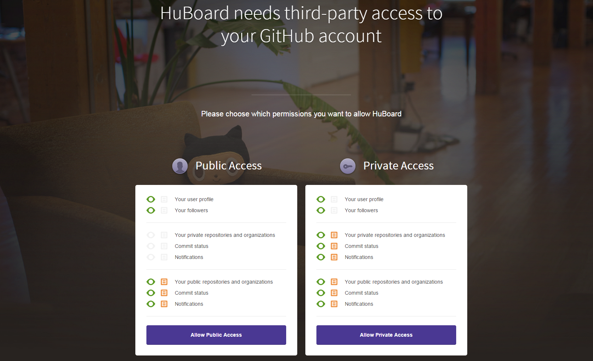Let HuBoard setup the GitHub integration

Service Hook generated by HuBoard
Bountysource
Funding platform for open-source software where users can create/collect bounties and pledge to fundraisers.

Overview of issues to place bounties on
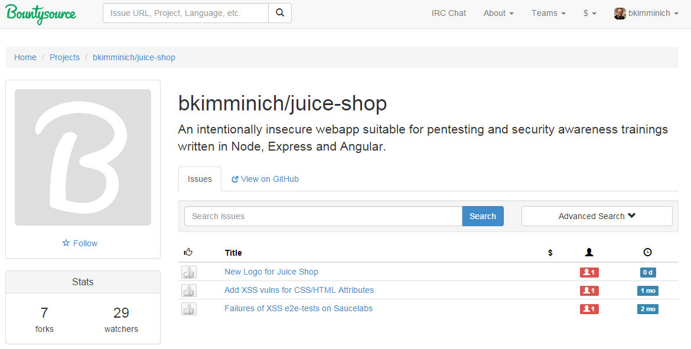Picking an issue to place a bounty on
Placing a 5$ bounty on a Travis-CI issue

A resolved issue with claimed 5$ bounty

Gitter
Chat. For GitHub.
The official Gitter chatroom of Juice-Shop
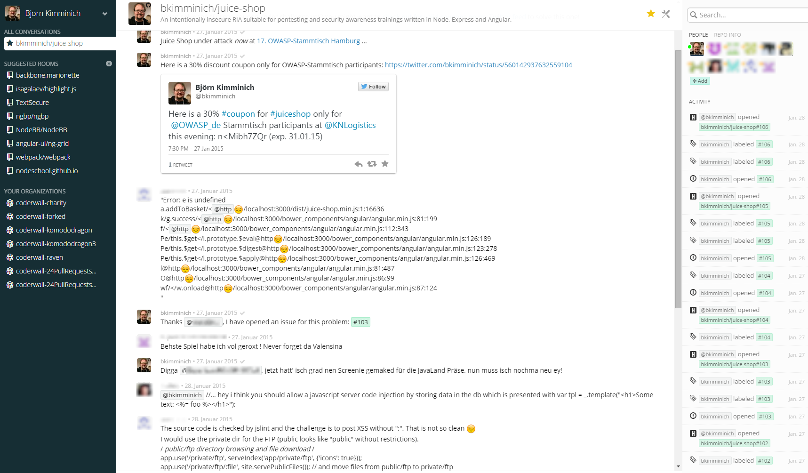Disclaimer: Chatroom might appear even more desolated on screenshot than in reality.
Activity sidebar populated via WebHooks
GitHub-side of the Gitter-WebHook

With granted repository access Gitter will setup its WebHook on GitHub automatically.
One final takeaway
If the services you are using offer status badges for your README.md...
... use them ...
...on every occasion ...
...because they are just cool !
Thanks for your attention!
by Björn Kimminich / kimminich.de
These slides are publicly available on GitHub and Slideshare.
Q&A

Credits
- reveal.js - The HTML Presentation Framework
- js-sequence-diagrams - Turns text into UML sequence diagrams
- GitHub Octodex - The official Octocat gallery